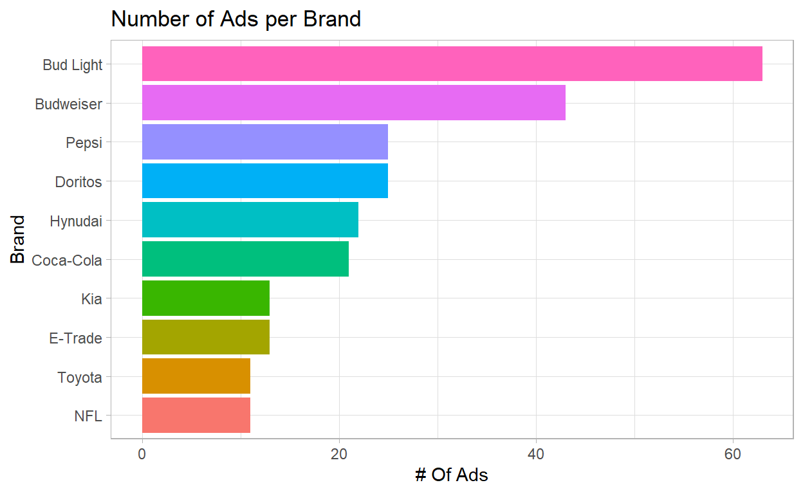

Like millions of viewers who tune into the big game year after year, I love Super Bowl commercials. I love them so much, in fact, that I wanted to know everything about them… by analyzing and categorizing them, of course. I dug into the defining characteristics of a Super Bowl ad, then grouped commercials based on which criteria they shared — and let me tell you, I found some really interesting clusters of commercials.
youtube <- read.csv("youtube.csv")
paged_table(youtube)
Let’s take a look into our data set, and the first thing that I will be doing here, will be exploring the data set, trying to find patterns and understand how the data is distributed.
youtube %>%
count(brand, sort = TRUE) %>%
head(20) %>%
mutate(brand=fct_reorder(brand,n)) %>%
ggplot(aes(n,brand,fill=brand)) +
geom_bar(stat="identity") +
theme(legend.position = "none") +
labs(title = "Number of Ads per Brand",
y = "Brand",
x= "# Of Ads")

Since we are dealing with huge numbers, we will need a log scale for that:
youtube %>%
gather(metric, value, contains("_count")) %>%
ggplot(aes(value)) +
geom_histogram(binwidth = .5) +
scale_x_log10(labels=comma) +
labs(x= "# Of Views") +
facet_wrap(~ metric)
youtube %>%
filter(!(is.na(view_count))) %>%
mutate(brand=fct_reorder(brand, view_count)) %>%
ggplot(aes(view_count, brand)) +
geom_boxplot() +
scale_x_log10()
youtube %>%
filter(!(is.na(view_count))) %>%
mutate(brand=fct_reorder(brand, view_count)) %>%
ggplot(aes(view_count, brand, fill=funny)) +
geom_boxplot() +
scale_x_log10(labels = comma)
youtube %>%
ggplot(aes(year, view_count, group= year)) +
geom_boxplot() +
scale_y_log10(labels=comma)
filtered <- youtube %>%
filter(year==2017) %>%
arrange(desc(view_count))
paged_table(filtered, options = list(rows.print = 10, cols.print = 5))
youtube %>%
gather(category, value, funny:use_sex) %>%
group_by(category=str_to_title(str_replace_all(category, "_"," ")),
year) %>%
summarize(pct=mean(value),
n = n()) %>%
ggplot(aes(year,pct,color=category))+
geom_line()+
scale_y_continuous(labels=percent)+
facet_wrap(~ category) +
theme(legend.position = "none") +
labs(x = "Time (rounded to 2-years)",
y = "% of ads with the quality ")
But to be 100% sure of this, we can run a regression and look over the p values:
Call:
glm(formula = use_sex ~ year, family = "binomial", data = youtube)
Deviance Residuals:
Min 1Q Median 3Q Max
-1.1383 -0.8030 -0.6207 1.2590 2.0358
Coefficients:
Estimate Std. Error z value Pr(>|z|)
(Intercept) 194.11283 52.98301 3.664 0.000249 ***
year -0.09710 0.02638 -3.681 0.000232 ***
---
Signif. codes: 0 '***' 0.001 '**' 0.01 '*' 0.05 '.' 0.1 ' ' 1
(Dispersion parameter for binomial family taken to be 1)
Null deviance: 286.75 on 246 degrees of freedom
Residual deviance: 272.19 on 245 degrees of freedom
AIC: 276.19
Number of Fisher Scoring iterations: 4
Call:
glm(formula = celebrity ~ year, family = "binomial", data = youtube)
Deviance Residuals:
Min 1Q Median 3Q Max
-1.0244 -0.8539 -0.7441 1.3244 1.8574
Coefficients:
Estimate Std. Error z value Pr(>|z|)
(Intercept) -130.20092 50.15284 -2.596 0.00943 **
year 0.06430 0.02494 2.579 0.00992 **
---
Signif. codes: 0 '***' 0.001 '**' 0.01 '*' 0.05 '.' 0.1 ' ' 1
(Dispersion parameter for binomial family taken to be 1)
Null deviance: 296.33 on 246 degrees of freedom
Residual deviance: 289.44 on 245 degrees of freedom
AIC: 293.44
Number of Fisher Scoring iterations: 4gathered_categories <- youtube %>%
gather(category, value, funny:use_sex) %>%
mutate(category=str_to_title(str_replace_all(category, "_"," ")))
library(tidytext)
gathered_categories %>%
group_by(brand, category) %>%
summarize( pct = mean(value)) %>%
ungroup() %>%
mutate(brand = reorder_within(brand, pct, category)) %>%
ggplot(aes(pct, brand))+
geom_col()+
scale_x_continuous(labels = percent)+
scale_y_reordered()+
facet_wrap(~ category, scales = "free_y") +
labs( y = "",
x= "% of brands ads have this quality")
gathered_categories %>%
group_by(brand, category) %>%
summarize( pct = mean(value)) %>%
ungroup() %>%
mutate(category = reorder_within(category, pct, brand)) %>%
ggplot(aes(pct, category))+
geom_col()+
scale_x_continuous(labels = percent)+
scale_y_reordered()+
facet_wrap(~ brand, scales = "free_y") +
labs( y = "",
x= "% of brands ads have this quality",
title = "What is each brand's fingerprint in terms of the type of ads it produces?")
Let’s take a look on the ratio of dislikes and likes for those brands:
likes_dislikes <- youtube %>%
mutate(dislike_pct = dislike_count/view_count,
like_ratio = like_count/view_count,
like_dislike_total = like_count + dislike_count,
dislike_pct = dislike_count/(like_count + dislike_count)) %>%
filter(like_dislike_total >= 1000) %>%
filter(!is.na(dislike_pct)) %>%
select(brand, year, description, view_count, like_dislike_total,
like_count, dislike_count, like_ratio) %>%
arrange(desc(view_count))
likes_dislikes %>%
mutate(dislike_pct = dislike_count/(like_count + dislike_count),
brand = fct_reorder(brand, dislike_pct, mean)) %>%
ggplot(aes(dislike_pct, brand)) +
geom_boxplot() +
scale_x_continuous(labels = percent) +
labs(title="What brands tend to produce polarizing ads in terms of Youtube likes?",
x = "Dislike / (Likes + Dislikes)",
y = "Brand")
We can do way more more where, but I will stay with those analysis for now. Thank you!